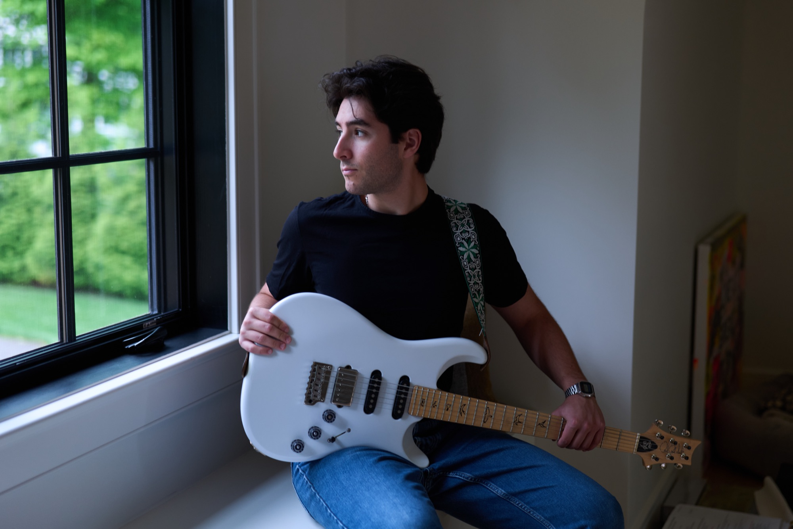

Madden Osherow
Music Industry student at USC Thornton, working where music meets business and law.
Los Angeles · New York
ScrollAbout
I study the music industry at USC’s Thornton School of Music, and I’m drawn to the place where music, business, and law meet.
I spent the summer of 2026 at LANDR, helping artists and streaming partners fix what goes wrong after a release goes live. Before that, I shadowed the head of legal at Universal Music Group’s New York office and music director Alex Lacamoire during the development of a new musical.
At USC, I serve as treasurer of Kappa Alpha Order, manage project risk for the USC Concerts Committee, and work in the business and legal department of 840 West Records. I’ve also fronted a band since 2021.
- Education
- USC Thornton School of Music B.S., Music Industry
- Class of 2029
- Fox Lane High School SAT 1520 · GPA 98% National Merit Commended Student, AP Scholar with Distinction, and National Honor Society
- Class of 2025
Experience
-
Jun – Aug 2026Remote
LANDR
Content Operations Intern, Support Team
Supported distribution and rights operations across the major streaming and social platforms, including Spotify, Apple Music, YouTube Content ID, Meta, and TikTok. Resolved post-release issues for artists and partners, worked directly with platform teams on metadata corrections and ingestion errors, and handled ISRC workflows and monetization eligibility.
-
Jun 2025New York, NY
Universal Music Group
Legal Job Shadow
Shadowed the head of legal in UMG’s New York office for two weeks. Reviewed unreleased lyrics for plagiarism and assisted with A&R activities for music clearance and release.
-
May 2025New York, NY
BASURA
Music Direction Job Shadow, with Alex Lacamoire
Shadowed Grammy and Tony Award-winning music director Alex Lacamoire during the development of the Gloria Estefan musical BASURA, directed by Michael Greif. Observed rehearsals, arrangements, vocal phrasing, instrumentation, and collaboration across the creative team.
“Madden demonstrated exceptional customer service and a proactive work ethic that far exceeded our expectations.”
Leadership
-
Apr 2026 – PresentLos Angeles, CA
Kappa Alpha Order
Treasurer
Manages the chapter’s finances, including budgeting, dues, and financial reporting.
-
Jan 2026 – PresentLos Angeles, CA
USC Concerts Committee
Project Risk Manager
Works on the risk management team behind the committee’s concerts.
-
Sep 2025 – PresentLos Angeles, CA
840 West Records
Business and Legal Department
Member of the label’s business and legal team.
Musician
Lead guitarist, lead vocalist, and harmonica player for Guard Hill Band since 2021.
- 6,000+ People at the Pound Ridge Harvest Festival, where the band opened for Grammy-winning Blues Traveler.
- 3× Battle of the Bands winner, in 2022, 2023, and 2024.
- 2021 The year the band started playing classic rock and modern pop at venues and benefit concerts across Westchester County, NY.
Performed with Alex Lacamoire, the Grammy and Tony Award-winning music director of Hamilton, In the Heights, and Dear Evan Hansen. Read the story in Connect to Mag ↗
- Berklee College of Music Guitar and Songwriting Programs Summer 2024
- Roots Rock Revival Master classes with Oteil Burbridge, North Mississippi Allstars, and Ray Ray Holloman Summer 2024
- Voices to End Hunger Lead guitarist for the “We’re All in This Together” benefit in New York Oct 2024

04 · Contact
Let’s talk.
Open to internships in music business and legal affairs.